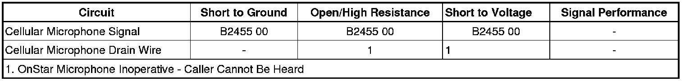

B2455
DTC B2455
Diagnostic Instructions
* Perform the Diagnostic System Check - Vehicle (Initial Inspection and Diagnostic Overview) prior to using this diagnostic procedure.
* Review Strategy Based Diagnosis (Initial Inspection and Diagnostic Overview) for an overview of the diagnostic approach.
* Diagnostic Procedure Instructions (Initial Inspection and Diagnostic Overview) provide an overview of each diagnostic category.
DTC Descriptor
DTC B2455 00
- Cellular Phone Microphone Circuit
Diagnostic Fault Information

Circuit/System Description
The vehicle communication interface module (VCIM) provides the cellular microphone, located on the inside rearview mirror with a supplied voltage on the cellular microphone signal circuit. When the microphone is in use, voice data from the user is sent back to the VCIM by means of the drain wire.
Conditions for Running the DTC
* Radio ON.
* Battery voltage must be between 9-16 volts.
Conditions for Setting the DTC
* The VCIM detects a short to voltage in the cellular microphone signal circuit for 10 seconds or greater.
* The VCIM detects an open/high resistance in the drain wire circuit for 10 seconds or greater.
Actions Taken When the DTC Sets
* The OnStar(R) status LED turns red.
* The VCIM will not receive a signal from the microphone.
* Calls can be placed but the caller cannot be heard.
Conditions for Clearing the DTC
* The condition responsible for setting the DTC no longer exists.
* A history DTC will clear once 50 consecutive malfunction-free ignition cycles have occurred.
Schematic Reference
OnStar Schematics (OnStar Schematics)
Connector End View Reference
Component Connector End Views (Connector Views)
Description and Operation
OnStar Description and Operation (OnStar Description and Operation)
Electrical Information Reference
* Circuit Testing (Component Tests and General Diagnostics)
* Connector Repairs (Component Tests and General Diagnostics)
* Testing for Intermittent Conditions and Poor Connections (Component Tests and General Diagnostics)
* Wiring Repairs (Component Tests and General Diagnostics)
Scan Tool Reference
Control Module References (Programming and Relearning) for scan tool information
Circuit/System Testing
1. Ignition OFF, disconnect the inside rearview mirror harness connector.
2. Ignition ON, test for 8.5-9.5 volts between the cellular microphone signal circuit terminal 10 and ground.
• If greater than the specified range, test the signal circuit for a short to voltage. If the circuit tests normal, replace the VCIM.
• If less than the specified range, test the signal circuit for a short to ground or an open/high resistance. If the circuit tests normal, replace the VCIM.
3. Ignition ON, test for 8.5-9.5 volts between the cellular microphone signal circuit terminal 10 and the drain wire circuit terminal 2.
• If less than the specified range, test the drain wire circuit for a short to voltage or an open/high resistance. If the circuit tests normal, replace the VCIM.
4. If all circuits test normal, replace the inside rearview mirror.
Repair Instructions
Perform the Diagnostic Repair Verification (Verification Tests) after completing the diagnostic procedure.
* Inside Rearview Mirror Replacement (UE1) (Inside Rearview Mirror Replacement (UE1))Inside Rearview Mirror Replacement (DD7, DD8) (Inside Rearview Mirror Replacement (DD7, DD8))
* Control Module References (Programming and Relearning) for VCIM replacement, setup, and programming